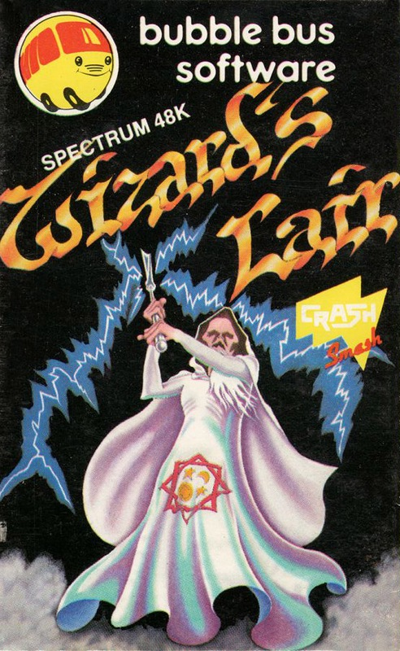
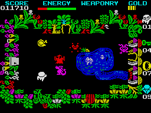
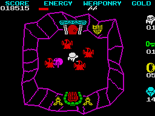
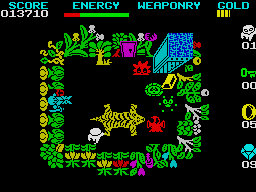
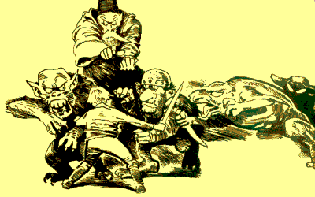

Wizard's Lair


{kind=link}

| Publisher: | Bubble Bus |
| Price: | £6.99 |
| Year: | 1985 |
| Source: | CRASH, Issue 14 |

The author of this game may sound familiar to CRASH readers because he also wrote a previous CRASH SMASH, Poppysoft’s Factory Breakout. This new game is nothing like the previous one — what it is inescapably like however, is Atic Atac and graphically at times like Sabre Wulf. So similar is the basic theme and graphic appearance, that accusations of copying are bound to fly, but there’s nothing wrong with taking a good idea and developing it, if the result is as good or better — and it remains to be seen what readers think of this.

with stream and lake
Wizard’s Lair is an arcade adventure with 256 locations on seven levels which are interconnected by trapdoors and lifts. The story involves Pot Hole Pete who, while on a subterranean ramble, stumbles across the Wizard’s Lair, a place inhabited by numerous and various monsters of appalling speed and determination to kill. The overall object is to collect all the pieces of the Golden Lion. The screen view is that of Atic Atac, i.e. an overhead perspective view of each location with all its four walls visible. In a similar vein doors open and shut according to their own whim, although Pete may pass through some without hindrance. Some locations are described by Sabre Wulf-like vegetation, while others are drawn as caverns.

graphic 3D rooms
Game features include the collection of food for energy, weapons, gold, gems, keys and the bits of the Golden Lion. Now and again Pete comes across a spell scroll, but the spell can only be used if he possesses enough gold. The spell allows you to gain either more weapons, more energy, convert to gems, have more keys or magic rings. Each of the objects serves a function, and one of the game objectives is to discover what everything does. Across the top of the screen there is a score line and bar codes for energy, weapons and gold, while down the right side legends tell you how many lives you have left, and how many keys, rings and gems you have collected. Scoring is done as a percentage of the adventure completed, time taken, objects collected and, of course, pieces of the Golden Lion found.
CRITICISM

stands in the top right corner
‘There is no doubt that this is an Atic Atac-like game, but saying that, it is distinctly different in many ways. The graphics seem to me to be somewhat better than those in the Ultimate game, they are much more varied, colourful and characteristic. Each of your enemies has its own character which allows you to build up tactics against them to defeat them. I like the way you can run out of weapons as well as energy and have to search for them as well as the Golden Lion. The game seemed to me to be a much faster playing game than Atic Atac with much more going on and gets very frantic at times. There are many doors for which you must have keys, while others are opened on touch. The main reason why I enjoyed it, is that there is so much activity going on all the while. Overall, a really professionally put together game that could be called an up-date on Atic Atac with more locations, more to do with smashing graphics — a brilliant piece of programming — a winner. Buy it!’
‘Yes, this is definitely like Atic Atac, but it is also different. It’s actually much faster for one thing, and there are other differences. Monsters often appear by coming through the doors and taking you by surprise. Your character is not drawn from the side but in overhead perspective too. He can run out of weaponry, which is alarming! The addition of spells enabling you to convert your gold to other things is a useful addition. There are many more locations and some of these have rivers running through them which turns the greater maze into a smaller, dissected one as well. The locations held in memory appear as fast as those in Atic Atac, but the line drawn caverns are redrawn each time. This is done very fast, and if it looks a bit more ragged than in the Ultimate game, it does, however, give you a valuable second’s breathing space — it also allows for the extra locations. In all, the graphics are of an excellent standard, extremely fast and flicker-free, imaginative and well drawn as well as colourful. Sound, too, is excellent with a good synthesised sounding tune and loads of noisy spot effects. Wizard’s Lair is bound to keep players at it for ages, just surviving as well as mapping! I enjoyed it immensely.’

‘Wizard’s Lair has an unusual fast loader, which makes the border flash in wide bands rather like some of the recent Commodore 64 loaders. It also draws the title page very quickly. There is a super key and joystick option menu, and the user definable key menu uses a large graphic of the Spectrum, colouring selected keys in red when you press them. This quality of design goes on into the high-energy game with its Ultimate-standard graphics and sound. It is, of course very similar to Atic Atac but does not suffer by the comparison at all in my opinion. There are still many things to discover — I don’t know what happens when you turn purple yet! It’s fast, playable and highly addictive and I’m sure Bubble Bus, who have done almost nothing before for the Spectrum, must be very pleased with it. I know I am.’
COMMENTS
| Control keys: | 3 options are selectable being: O/P,Q/A,M or QWERT or 67890, and if you prefer, you can define the keys yourself |
| Joystick: | Kempston, Protek, AGF, Sinclair 2 |
| Keyboard play: | Very responsive, nice to have so many selections |
| Use of colour: | Excellent |
| Graphics: | Excellent, fast and ultra-smooth |
| Sound: | Excellent |
| Skill levels: | 1 |
| Lives: | 5 |
| Screens: | 256 |
| General rating: | An excellent arcade/adventure game which requires exploration and discovery. Very good value for money and highly recommended. |
| Use of computer: | 98% |
| Graphics: | 94% |
| Playability: | 94% |
| Getting started: | 95% |
| Addictive qualities: | 94% |
| Value for money: | 90% |
| Overall: | 94% |